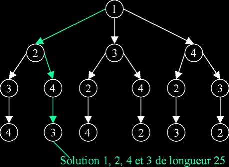
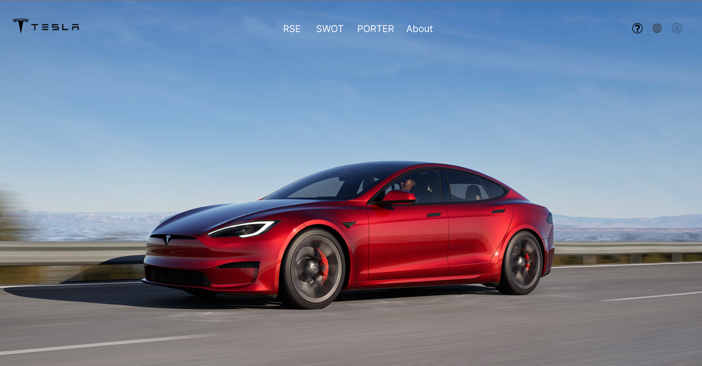
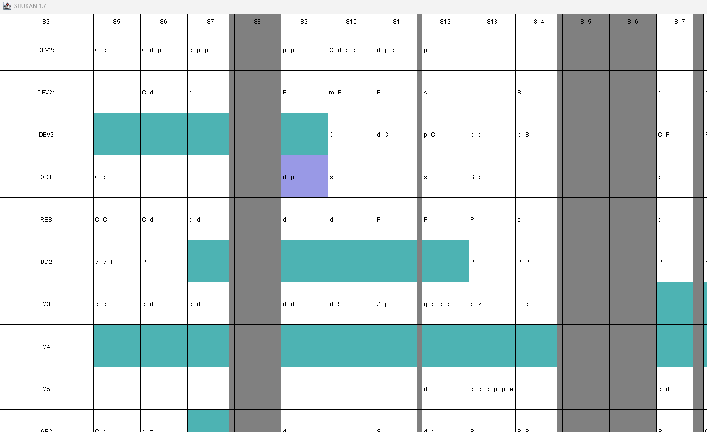

Applications web, logiciels et bases de données, réalisés en solo ou en
groupe dans le cadre du BUT Informatique.
0projets
WebTerminé
Serre connectée
Projet réalisé lors d'un stage de 10 semaines au Club Robot de l'IUT
de Saint-Dié-des-Vosges : application web de supervision et de
pilotage d'une serre connectée. L'interface suit les capteurs en
temps réel, commande les actionneurs et propose une représentation
3D synchronisée de la serre.
Django RESTThree.jsRaspberry PiArduino
WebTerminé
Coup de Sifflet — Vote sportif en ligne
Application web de gestion d'une élection sportive : inscription des
électeurs, gestion des rôles, vote sécurisé et publication des
résultats à la clôture. Le vote est anonyme et ne peut être modifié
après validation.
HTMLCSSJavaScriptSQLSécurité web
AuditTerminé
Audit de SAECine, application de vote cinématographique
Audit et amélioration d'une application de vote cinématographique en
PHP/MySQL : optimisation des requêtes et de la base de données,
conteneurisation Docker, améliorations d'accessibilité et
renforcement de la robustesse avec 129 tests PHPUnit.
PHPMySQLDockerPHPUnit
Jeu vidéoTerminé
Jeu textuel en C
Jeu d'aventure textuelle où le joueur se déplace dans un monde
composé de cases, chacune avec son nom, sa description et ses
directions possibles. Gestion des commandes et des déplacements via
un moteur d'interactions.
CStructures de données
LogicielTerminé
Algorithme du voyageur de commerce

Génération aléatoire de points, calcul de la matrice des distances
(formule euclidienne) et résolution par algorithme glouton, amélioré
par heuristiques. Affichage dynamique des résultats et mesures de
performance.
CAlgorithmes
WebTerminé
Reproduction du site Tesla

Maquette conçue sur Figma puis reproduite en HTML/CSS selon la
charte graphique de Tesla. Interface responsive pensée pour une
expérience fluide et des bonnes pratiques d'accessibilité.
FigmaHTMLCSS
LogicielTerminé
Gestion des emplois du temps universitaires

Application de gestion des emplois du temps, avec stockage des
données dans une base relationnelle, détection et résolution des
conflits d'horaires.
JavaSQL
Base de donnéesTerminé
Base de données — Gestion de supermarché
Modèle relationnel complet (produits, clients, factures, employés,
rayons) avec déclencheur SQL pour la mise à jour automatique du
stock après chaque vente.